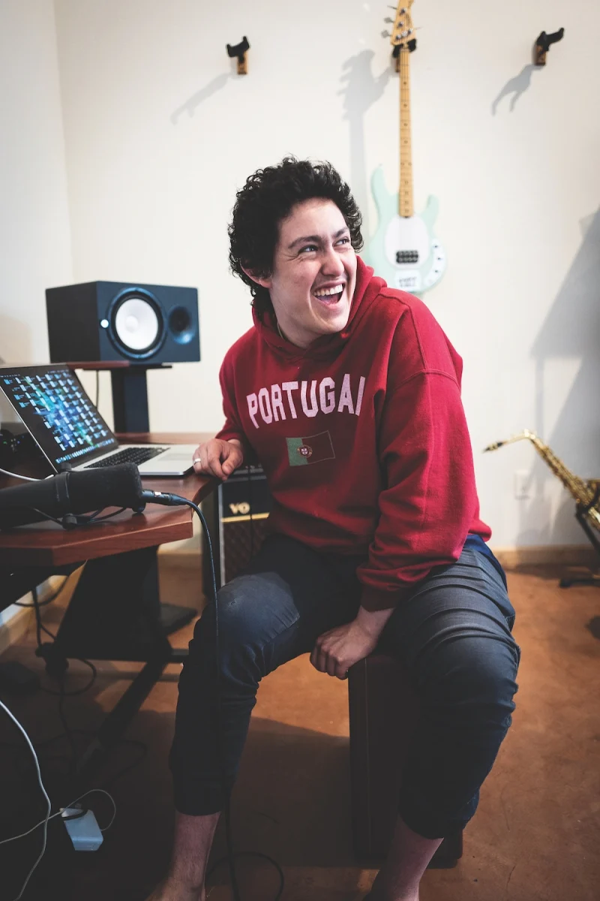

Early Life: Hobo Johnson's career began to take shape in the early 2010s when he embarked on his journey as a spoken word poet in Sacramento, California. Armed with his emotionally charged storytelling and a magnetic stage presence, he started performing at local open mic nights and small venues, gradually gaining recognition in the local arts community. Hobo Johnson's performances were a captivating mix of vulnerability, wit, and unfiltered expression, allowing him to connect deeply with his audience. As he honed his craft and explored various musical influences, his style evolved, incorporating elements of hip-hop and alternative rock into his spoken word performances. This experimentation with different genres laid the foundation for his distinctive sound that would later propel him to fame. The breakthrough came in 2017 when his viral hit, "Peach Scone," catapulted him into the spotlight, marking the beginning of a remarkable journey towards becoming a celebrated and respected artist in the music industry.
About Hobo Johnson: Hobo Johnson, whose real name is Frank Lopes Jr., is an American rapper, singer, and spoken word artist known for his unique blend of emotional storytelling and raw lyricism. He got his start in the music scene during the early 2010s when he started performing spoken word poetry in his hometown of Sacramento, California. Inspired by artists like John Lennon and spoken word poets such as Saul Williams, he developed a distinctive style that combined elements of hip-hop, folk, and alternative rock. Hobo Johnson gained significant attention in 2017 with the release of his breakthrough single, "Peach Scone." The song, along with its accompanying music video, went viral on YouTube, garnering millions of views and introducing him to a broader audience. His heartfelt and confessional lyrics, delivered with a mix of spoken word and singing, resonated with listeners, making him a rising star in the indie music scene. Since then, Hobo Johnson has continued to build his following, releasing successful albums like "The Rise of Hobo Johnson" and "The Fall of Hobo Johnson," solidifying his reputation as a compelling and authentic artist.